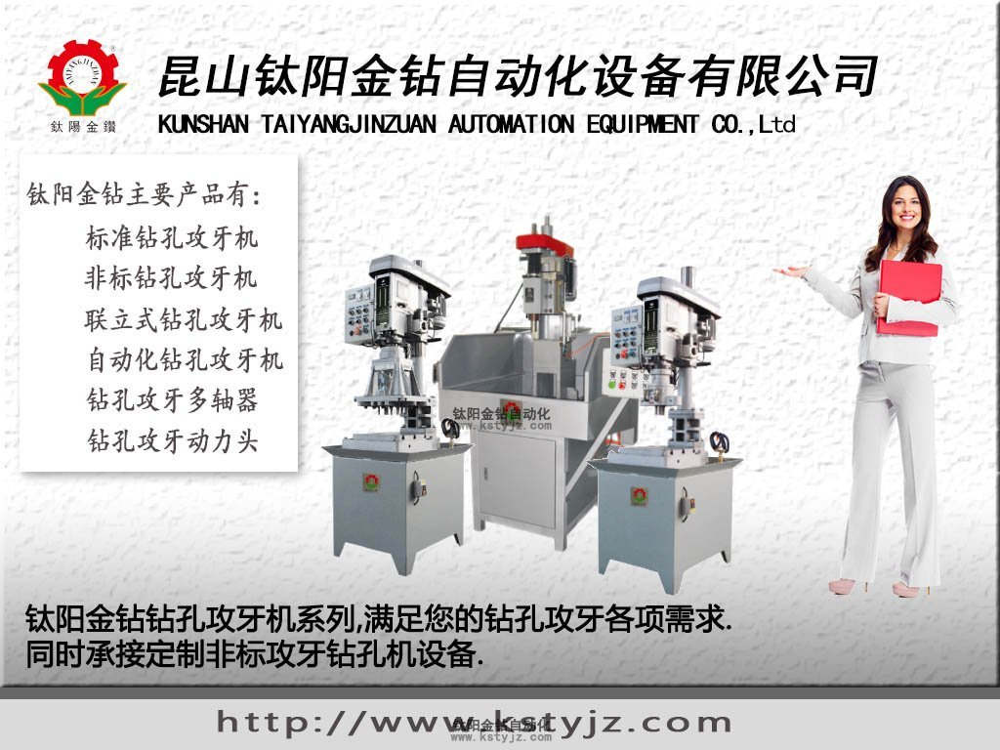

切削液 百 科
文章出處：鈦陽金鑽責任編輯：kstyjz人氣：發表時間：2015-04-29 11:07
切削液 百 科
文 / 鈦陽金鑽 摘錄
文 / 鈦陽金鑽 摘錄

在精密加工領域，尤其是攻牙機、鑽孔機精密加工的時候，切削液的運用尤為重要，因此，昆山鈦陽金鑽自動化設備有限公司整理了切削液的相關知識，希望可幫到您。切削液（cutting fluid, coolant）是一種用在金屬切削、磨加工過程中，用來冷卻和潤滑刀具和加工件的工業用液體，切削液由多種超強功能助劑經科學復合配合而成，同時具備良好的冷卻性能、潤滑性能、防�蚸坒遄B除油清洗功能、防腐功能、易稀釋特點。克服了傳統皂基乳化液夏天易臭、冬天難稀釋、防�蛃蘆G差的的毛病，對車床漆也無不良影響，適用於黑色金屬的切削及磨加工，屬當前最領先的磨削產品。 切削液各項指標均優於皂化油，它具有良好的冷卻、清洗、防�袢弁S點，並且具備無毒、無味、對人體無侵蝕、對設備不腐蝕、對環境不污染等特點。
分類
水基的切削液可分為乳化液、半合成切削液和全合成切削液。
乳化液、半合成以及全合成的分類通常取決於產品中基礎油的類別：乳化液是僅以礦物油作為基礎油的水溶性切削液；半合成切削液是既含有礦物油又含有化學合成基礎油的水溶性切削液；全合成切削液則是僅使用化學合成基礎油（即不含礦物油）的水溶性切削液。
每一種類型的切削液都會含有除基礎油以外的各種添加劑：防�袛砥B有色金屬腐蝕鈍化劑、消泡劑等。
有些廠家會有微乳液的分類；通常認為是介於乳化液和半合成切削液之間的類別。
乳化液的稀釋液在外觀上呈乳白色；半合成液的稀釋液通常呈半透明狀，也有一些產品偏乳白色；全合成液的稀釋液通常完全透明如水或略帶某種顏色。
作用
潤滑
金屬切削加工液（簡稱切削液）在切削過程中的潤滑作用，可以減小前刀面與切屑、後刀面與已加工表面間的摩擦，形成部分潤滑膜，從而減小切削力、摩擦和功率消耗，降低刀具與工件坯料摩擦部位的表面溫度和刀具磨損，改善工件材料的切削加工性能。 在磨削過程中，加入磨削液後，磨削液滲入砂輪磨粒－工件及磨粒－磨屑之間形成潤滑膜，使界面間的摩擦減小，防止磨粒切削刃磨損和粘附切屑，從而減小磨削力和摩擦熱，提高砂輪耐用度以及工件表面質量。
冷卻
切削液的冷卻作用是通過它和因切削而發熱的刀具（或砂輪）、切屑和工件間的對流和汽化作用，把切削熱從刀具和工件處帶走，從而有效地降低切削溫度，減少工件和刀具的熱變形，保持刀具硬度，提高加工精度和刀具耐用度。切削液的冷卻性能和其導熱係數、比熱、汽化熱以及粘度（或流動性）有關。水的導熱係數和比熱均高於油，因此水的冷卻性能要優於油。
清洗
在金屬切削過程中，要求切削液有良好的清洗作用。除去生成切屑、磨屑以及鐵粉、油污和砂粒，防止機床和工件、刀具的沾污，使刀具或砂輪的切削刃口保持鋒利，不致影響切削效果。對於油基切削油，粘度越低，清洗能力越強，尤其是含有煤油、柴油等輕組份的切削油，滲透性和清洗性能就越好。含有表面活性劑的水基切削液，清洗效果較好，因為它能在表面上形成吸附膜，阻止粒子和油泥等粘附在工件、刀具及砂輪上，同時它能滲入到粒子和油泥粘附的界面上，把它從界面上分離，隨切削液帶走，保持界面清潔。
防��
在金屬切削過程中，工件要與環境介質及切削液組分分解或氧化變質而產生的油泥等腐蝕性介質接觸而腐蝕，與切削液接觸的機床部件表面也會因此而腐蝕。此外，在工件加工後或工序之間流轉過程中暫時存放時，也要求切削液有一定的防�蚽鄐O，防止環境介質及殘存切削液中的油泥等腐蝕性物質對金屬產生侵蝕。特別是在我國南方地區潮濕多雨季節，更應注意工序間防�衒僧I。
其它
除了以上4種作用外，所使用的切削液應具備良好的穩定性，在貯存和使用中不產生沉澱或分層、析油、析皂和老化等現象。對細菌和黴菌有一定抵抗能力，不易長霉及生物降解而導致發臭、變質。不損壞塗漆零件，對人體無危害，無刺激性氣味。在使用過程中無煙、霧或少煙霧。便於回收，低污染，排放的廢液處理簡便，經處理後能達到國家規定的工業污水排放標準等。
使用方法
日常使用濃度不大於5%，即5公斤以下本產品加95公斤左右的普通自來水混合使用。根據使用的條件不同，使用濃度可在1%-5%；粗加工濃度低些，使用濃度可在1%-3%。（特殊工藝和有特殊要求的材料除外）
由於各個生產廠家的使用方法不同，以此為類。但請在使用前閱讀購買廠家的使用說明。
昆山鈦陽金鑽自動化設備有限公司，是專業生產鑽孔機、攻牙機的企業，如果您有相關的採購意向，不要猶豫，請立即致電 0512-55160295
上一篇：攻牙油 百 科 | 下一篇：自動攻牙機深孔。小孔加工的優勢
相關資訊
- 切削液 百 科'>切削液 百 科
- 自動攻牙機深孔。小孔加工的優勢'>自動攻牙機深孔。小孔加工的優勢
- 動力頭基本構造及相關作用'>動力頭基本構造及相關作用
- 為什麼鑽孔機和攻牙機的動力頭不能通用'>為什麼鑽孔機和攻牙機的動力頭不能通用
- 問：攻牙機適合那些加工產品？'>問：攻牙機適合那些加工產品？
- 攻牙機使用的技巧大全'>攻牙機使用的技巧大全
- 自動攻牙機加工質量的掌控要領---即，如'>自動攻牙機加工質量的掌控要領---即，如
- 攻牙機攻牙的六大核心要點'>攻牙機攻牙的六大核心要點
- 自動攻牙機常見五大難題的解決之道'>自動攻牙機常見五大難題的解決之道
- 避免攻牙機操作事故的安全操作注意事項'>避免攻牙機操作事故的安全操作注意事項


推薦文章
- 切削液 百 科
- 自動攻牙機深孔。小孔
- 動力頭基本構造及相關
- 為什麼鑽孔機和攻牙機
- 問：攻牙機適合那些加
- 自動攻牙機加工質量的
- 攻牙機攻牙的六大核心
- 攻牙機零件的酸洗磷化
- 近年來鑽孔攻牙行業的
- 轉盤式自動攻牙機、加